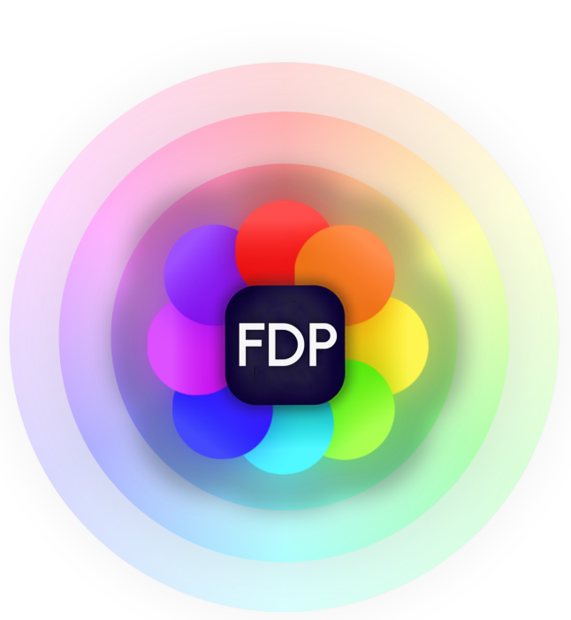

Discord
Donate Now!
->
Redirecting to Downloads…
We've moved to a new home. You'll be taken there automatically in a moment.
Go now
->
Redirecting to the new downloads page
Taking you to our official site…
5